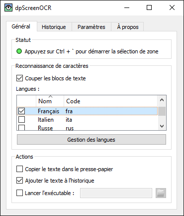

Téléchargez dpScreenOCR-1.5.1-linux-x86_64.tar.xz, qui fonctionne sur la plupart des systèmes, ou sélectionnez un paquet pour votre distribution :

Direct download: installer or ZIP archive
dpScreenOCR is a program that can extract text from any part of the screen. It eliminates the need for manual retyping when working with scanned documents, screenshots, videos, user interface elements, and other situations where it is impossible to copy text in the usual way.

Features:
Lisez le manuel pour des instructions d'installation, de configuration, et d'utilisation du programme.
Télécharger la version 1.5.1 (notes de mise à jour, licence) :
Contribuez en participant aux traductions ou au développement.